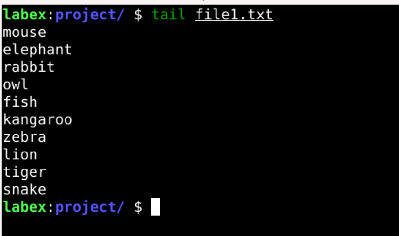

Overview
The tail command is used to display the last lines of a file. It is commonly used to monitor log files in real time.
What Does TAIL Command Do?
The tail command is used to:
- Monitor logs for real-time updates.
- Preview the end of a file.
Example
# Display the last 10 lines of a file
tail file.txt
# Continuously monitor a log file
tail -f logfile.txtExample Output

The image above shows an example of the output from the 'tail' command, displaying processes sorted by CPU usage.